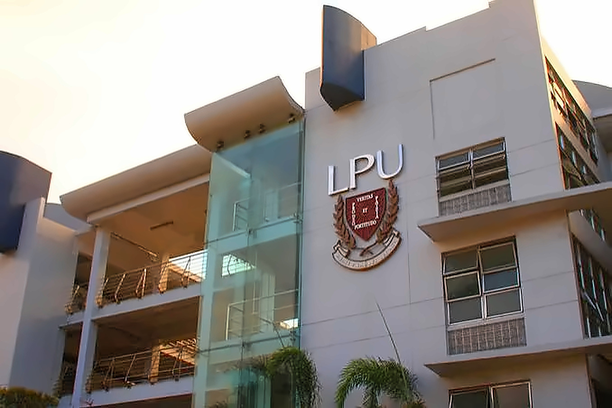
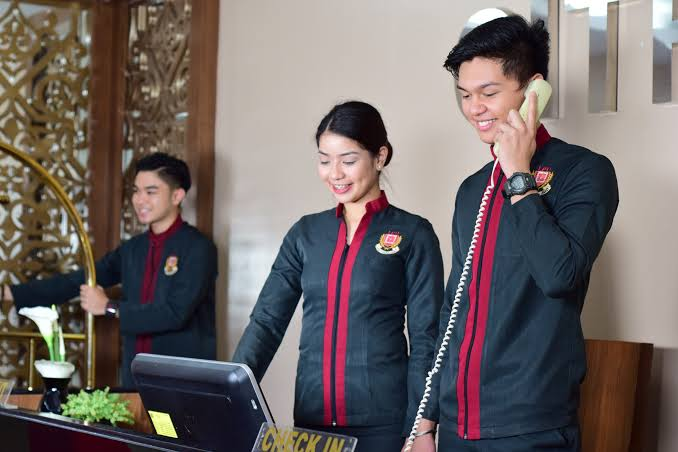
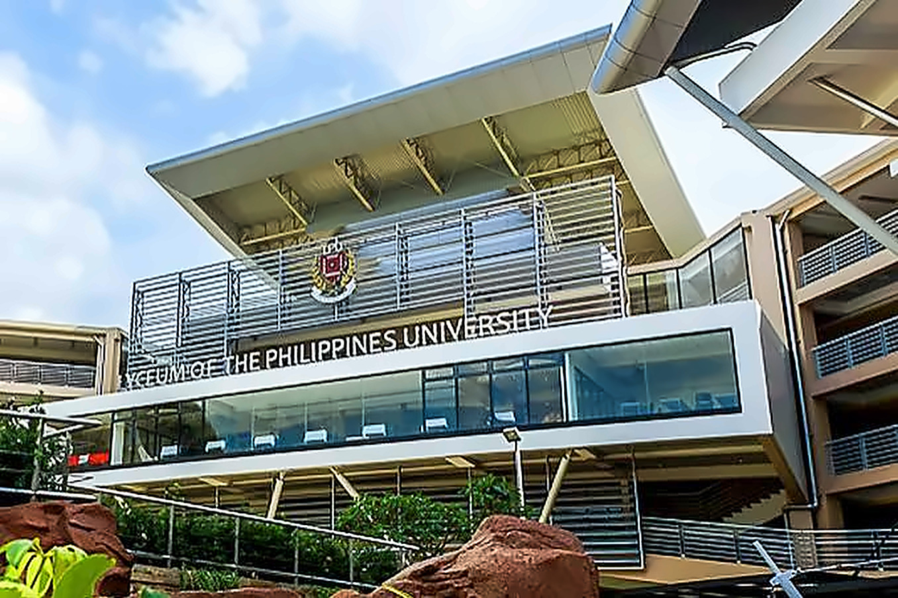
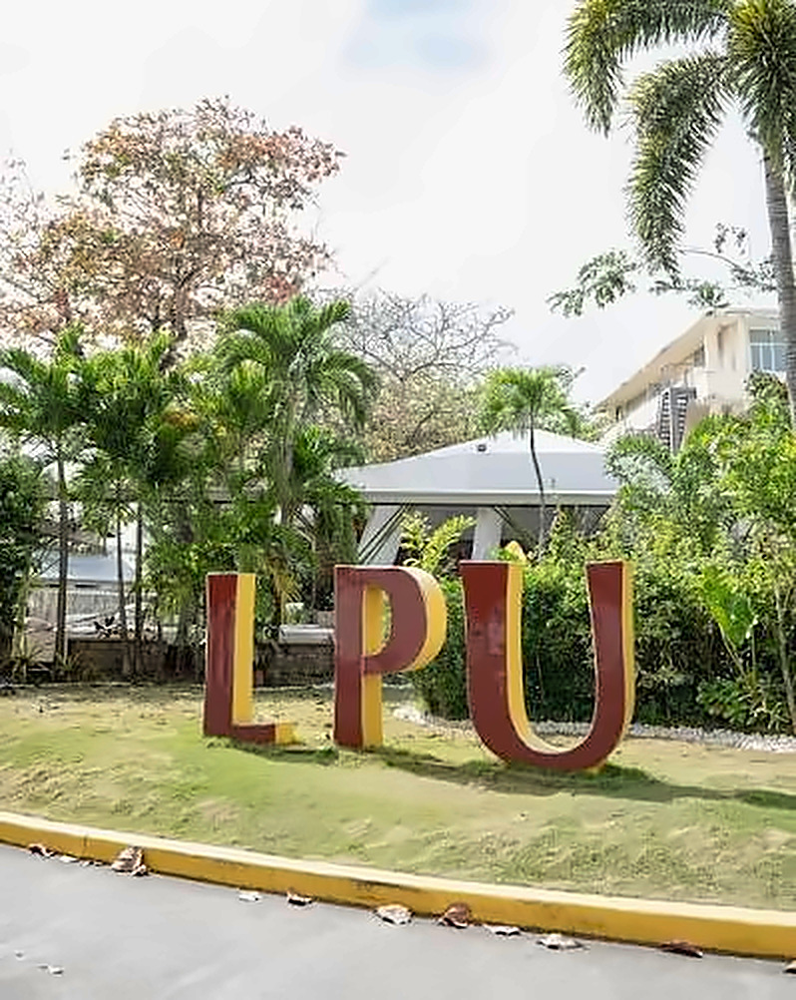
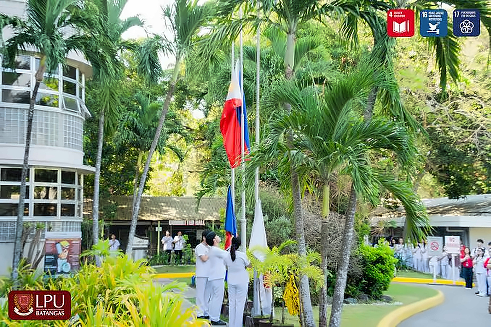

Pro Deo et Patria
Excellence in Education. Character for Life.
Lyceum of the Philippines University – Batangas prepares students for professional success and meaningful service to community and country.

Welcome
Learn Different. Live Different.
Lyceum of the Philippines University – Batangas is a Jose P. Laurel legacy school that forms graduates guided by Veritas et Fortitudo (Truth and Courage) and Pro Deo et Patria (For God and Country).
What We Offer
Our Academic Programs
From senior high school to nursing, business, technology, hospitality and maritime studies.
BS Business Administration
Build leadership and management skills with a curriculum aligned to industry needs.
Learn more →
BS Nursing
Prepare for compassionate, evidence-based healthcare practice through the College of Nursing.
Learn more →
Information Technology
Learn programming, networks and systems in modern computer laboratories.
Learn more →
Hospitality & Tourism
Train for hotels, restaurants and travel through hands-on service practice.
Learn more →
Maritime Programs
Study with the Lyceum International Maritime Academy (LIMA) for careers at sea.
Learn more →Why LPU Batangas
A Community That Shapes Futures
Dedicated Faculty
Mentors committed to academic rigor and student growth.
Industry Ready
Internships, laboratories and training aligned with real careers.
Values-Driven
Formation grounded in integrity, service and patriotism.
Campus Life
Life at LPU Batangas
Modern facilities, hands-on training and a proud Lycean community.



Achievements
Pride of the Lyceans
Recognition drawn from LPU Batangas' official materials.
AUN-QA Certified
The first and only maritime education institution in the Philippines AUN-QA certified for its Marine Engineering and Marine Transportation programs.
Level IV PACUCOA
Marine Engineering is Level IV accredited, and Marine Transportation is the region's first Level IV reaccredited program.
Globally Recognized
Featured in the Times Higher Education Impact Rankings and rated under the QS Stars system.
Testimonials
Voices of Our Community
Begin your journey with LPU Batangas
Talk to our admissions team and find the right program for you.
Get in Touch